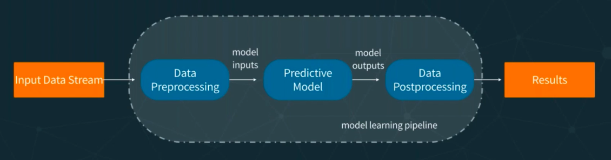
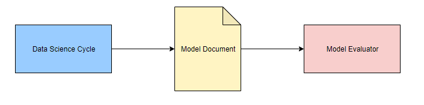
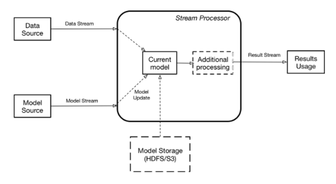

3 End-to-End ML with Apache Spark
3.1 Outline
- ML Project Overview
- Operationalizing
- Spark-Based Projects
- Code Example!
3.2 Starting Questions
- Who in here is a Data Professional (e.g., scientist, engineer)?
- How many of you have used Apache Spark? in production?
- How many of you are currently developing/maintaining a ML service?
3.3 Acknowledgments
This talk is based and inspired on the following conferences:
- Operationalizing Machine Learning - Serving ML Models by Boris Lublinsky
- Concept Drift: Monitoring Model Quality in Streaming Machine Learning Applications by Emre Velipasaoglu
- R, Scikit-Learn, and Apache Spark ML: What Difference Does It Make? by Villu Ruusmann
Find the complete list of references in the References section.
3.4 Prerequisites
This talk assumes you are a machine learning enthusiast or a data-professional (e.g. scientist, engineer) that is well aware the basic concepts required to design and execute an ML-project.
The audience must have a workable understanding of:
- Main programming languages used in the data-sphere (i.e. scala, python, R)
- General understanding of data architecutres (e.g. batch-oriented, streaming)
- Machine Learning theory (i.e., lots of math).
- Machine Learning frameworks (e.g., Spark ML, Tensorflow, PyTorch)
- Data-related skills (e.g., cleaning, visualization)
3.5 ML Project Overview
Typically with a ML Project, different groups are responsible for model training and serving. Moreover, the data science toolbox is constantly evolving, pushing software engineers to create more model-serving frameworks and introducing complexity to the development pipeline.
Consider the following machine-learning pipeline:

Machine Learning Cycle.
3.5.1 What’s a ML Model?
We will use the idea of a model as just a function f that transforms a set of inputs x into outputs y (i.e. y = f(x)).
This definition allows us to apply functional composition in the implementation of our ML service.
With this is mind, we can introduce the concept [machine learning pipelines ] as a graph defining a chain of operations (e.g., data transformations):

Why is it important to define a pipeline? To encapsulate all the logic needed to serve the machine learning model. This formalizes the pipeline form the input data to the output.
3.6 Operationalizing
3.6.1 Traditional Approach
Traditionally, the machine learning model was viewed as code. This code had to be somehow imported for serving in production.

Impedance mismatch!
3.6.2 A simple solution
We can shift our thinking from a “code” perspective to a “data” perspective and represent the model using a standard specification that’s agnostic to the training process. We can use the PMML specification designed by the Data Mining Group to achieve this.
Predictive Markdown Model Language is:
“an XML-based language that provides a way for applications to define statistical and data-mining models as well as to share models between PMML-compliant applications.”
(Ruusmann 2017)
Integration with the most popular ML frameworks via JPMML:
Using these tools we can achieve:

Simple Scoring.
3.6.3 Best Practice
We can use either a stream-processing engine (SPE e.g., Apache Spark, Flink) or a stream-processing library (SPL e.g., Akka Stream, Kafka Stream).

Suggested architecture.
- SPE: Good fit for applications that require features provided out of the box by such engines.
- SPL: Provide a programming model highly customizable and light-weight.
(Lublinsky 2017)
We can use Akka Streams - based on Akka Actors, to implement the proposed architecture (see syntax example). The result would look like this:
Naive Akka Implementation
Simple Akka Implementation
Furthermore, we can enhance this approach by using Akka Clusters.
Akka Cluster Implementation
Akka Cluster Implementation
3.6.4 The Big Picture
Dean Wampler does a fantastic job describing the overall picture of a data-driven system architecture.

Big Picture Architecture
(Wampler 2017)
3.7 Spark-Based Projects
3.7.1 Why Apache Spark?
According to their website,
“Apache Spark is a unified analytics engine for large-scale data processing.”
According to the book “High Performance Spark - Best Practices for Scaling & Optimizing Apache Spark”:
“Apache Spark is a high-performance, general puropose distributed computer system. Spark enables us to process large quantities of data, beyond what can fit on a sinlge machine, with a high-level, relatively easy-to-use API. Uniquely, Spark allows us to write the logic of data transformations and machine learning algorithms in a way that is parallelizable, but relatively system agnostic.”
(Karau and Warren 2017)
Most of the Apache Spark features revolve around a base data-structure called RDDs (resilient distributed datasets). An RDD is a fault-tolerant collection of elements that can be operated on parallel.
Let’s initialize an Spark Session (sbt console: sbt -Dscala.color "content/console"):
import org.apache.spark.sql.SparkSession
val spark =
SparkSession.builder.appName("Example!").config("spark.master", "local[*]").getOrCreate()
import spark.implicits._By default, the number of partitions is the number of all available cores (Laskowski 2017):
spark.sparkContext.defaultParallelism
// res0: Int = 12We can test this by creating a simple Dataset from a list:
trait Person
object Person {
final case class Dead(name: String, birthYear: Int, deadYear: Int) extends Person {
def kill: Dead = this
}
final case class Alive(name: String, birthYear: Int) extends Person {
def kill: Dead = Dead(name, birthYear, 2019)
}
val names: List[String] = List(
"Data Ninja",
"Random Developer",
"Pizza Lover",
"Beer Lover"
)
val years: List[Int] = (1980 to 2000).toList
def getRandomElement[A](ls: List[A]): A =
ls(scala.util.Random.nextInt(ls.size))
def getRandom: Alive = Alive(getRandomElement(names), getRandomElement(years))
}
val people: List[Person.Alive] = (1 to 1000).toList.map(i => Person.getRandom)We can now create a Dataset[Person]:
import org.apache.spark.sql.Dataset
val alivePeople: Dataset[Person.Alive] = spark.createDataset(people)The number of partitions on this dataset:
alivePeople.rdd.partitions.size
// res1: Int = 12val deadPeople: Dataset[Person.Dead] =
alivePeople.filter(_.birthYear > 1994).map(person => person.kill)
// deadPeople: org.apache.spark.sql.Dataset[Person.Dead] = [name: string, birthYear: int ... 1 more field]
deadPeople.show()
// +----------------+---------+--------+
// | name|birthYear|deadYear|
// +----------------+---------+--------+
// | Data Ninja| 1998| 2019|
// |Random Developer| 2000| 2019|
// |Random Developer| 1996| 2019|
// | Data Ninja| 1995| 2019|
// |Random Developer| 1996| 2019|
// | Beer Lover| 1997| 2019|
// | Beer Lover| 1997| 2019|
// | Pizza Lover| 1997| 2019|
// | Data Ninja| 1999| 2019|
// | Beer Lover| 1997| 2019|
// | Data Ninja| 1996| 2019|
// | Beer Lover| 1996| 2019|
// | Beer Lover| 1997| 2019|
// | Pizza Lover| 1997| 2019|
// | Data Ninja| 1995| 2019|
// | Beer Lover| 1999| 2019|
// |Random Developer| 1995| 2019|
// | Pizza Lover| 1995| 2019|
// | Data Ninja| 1997| 2019|
// | Pizza Lover| 2000| 2019|
// +----------------+---------+--------+
// only showing top 20 rows
// spark.close()For performance reasons, this presentation will use the official Scala API.
3.7.2 Intro to Spark ML
Spark ML is a practical and scalable machine learning library based on a [Dataset]. A Dataset is a distributed collection of data with interesting features such as strong typing, lambda functions, and with the advantages of the Spark SQL’s optimized execution engine. We can manipulate a dataset with functional transformantions. The most basic ones:
- map -
Dataset[A].map(fn: A => B): Dataset[B] - flatMap -
Dataset[A].flatMap(fn: A => Dataset[B]): Dataset[B] - filter -
Dataset[A].filter(fn: A => Boolean): Dataset[A]
One of the most usefull abstractions available on the Spark ML package are pipelines. Main concepts:
Dataset[Row]: A set of data, also called dataframe. Each row usually represents an observation.Transformer: an algorithm that takes oneDataFrameand returns anotherDataFrame.Estimator: an algorithm that takes aDataFrameand returns aTransformer.Pipeline: a chain of multipleTransformerorEstimator.
3.7.3 Intro to JPMML and Openscoring
Data Scientist might use Python and R for exploration and modeling while software engineers use Scala, Java, or Go for the system architecture. Complexity arises when dealing with multiple runtimes and trying to integrate the data solutions into the system. One way to standardize this interaction is via PMML: Predictive Markdown Model Language.
To use the jpmml-sparkml library, just add the following dependency to your sbt file:
"org.jpmml" % "jpmml-sparkml" % "1.4.5"Now we can just take a Spark PipelineModel and create a PMML object:
val pmmlBuilder = new PMMLBuilder(schema, pipelineModel)
pmmlBuilder.build()See the official jpmml-sparkml github repo for a complete list of supported PipelineStages types.
We can use Openscoring, a java-based REST web-service, as our scoring-engine of the resulting PMML model.
- Simple but powerful API
- Allows for single predictions and for batch predictions.
- Acceptable performance (usually sub-milliseconds respond time)
Model REST API endpoints:
| HTTP method | Endpoint | Required role(s) | Description |
|---|---|---|---|
| GET | /model | - | Get the summaries of all models |
| PUT | /model/${id} | admin | Deploy a model |
| GET | /model/${id} | - | Get the summary of a model |
| GET | /model/${id}/pmml | admin | Download a model as a PMML document |
| POST | /model/${id} | - | Evaluate data in “single prediction” mode |
| POST | /model/${id}/batch | - | Evaluate data in “batch prediction” mode |
| POST | /model/${id}/csv | - | Evaluate data in “CSV prediction” mode |
| DELETE | /model/${id} | admin | Undeploy a model |

Complexity vs dataset size.
(Ruusmann 2017)
3.8 Code Example!
3.8.1 Download the data
We can use the Gutenberg Project as a data-source for our ML task. To download the complete content of the gutenberg project as a set of txt-files run the following bash-command:
curl -sSL https://raw.githubusercontent.com/RHDZMOTA/spark-wordcount/develop/gutenberg.sh | shDepending on your network speed this can take up to 3 hours.
Let’s figure out the “footprint” of this dataset:
- Number of books:
ls -l gutenberg | wc -l - Data size:
du -sh gutenberg
Consider taking a random sample to facilitate local development. The following command generates a sample of 5K books:
mkdir gutenberg-sample && ls gutenberg/ | shuf -n 5000 | xargs -I _ cp gutenberg/_ gutenberg-sample/_Printing the results.
echo "There are $(ls -l gutenberg | wc -l) books that represent: $(du -sh gutenberg)"3.8.2 Minimum Setup
- Install [Java 8] or greater.
- Debain-based OS:
sudo apt install openjdk-8-jdk
- Debain-based OS:
- Install the [Scala Build Tool] (SBT)
- Debian-based OS:
$ sudo apt install wget
$ wget https://dl.bintray.com/sbt/debian/sbt-1.2.6.deb
$ sudo dpkg -i sbt-1.2.6.deb
$ rm -r sbt-1.2.6.deb
$ sbt about3.8.3 WordCount
Let’s do a quick wordcount example on the dataset as a warm-up exercise:
import com.rhdzmota.presentations.Settings.S03
import com.rhdzmota.presentations.S03.config.Context
import org.apache.spark.sql._
object WordCount extends Context {
import spark.implicits._
final case class WordCount(word: String, count: Long)
val data: Dataset[String] = spark.read.textFile(S03.Data.source)
val wordcount: Dataset[WordCount] = data
.flatMap(_.split("""\s+""")).map(_.toLowerCase.replaceAll("[^A-Za-z0-9]", "")).filter(_.length > 1)
.groupByKey(identity).count().map({case (w, c) => WordCount(w, c)})
.sort($"count".desc)
def main(args: Array[String]): Unit = {
println("S03 WordCount Application")
wordcount.show()
spark.close()
}
}Run:
WordCount.main(Array[String]())Or:
sbt "content/runMain com.rhdzmota.presentations.S03.WordCount" 3.8.4 Next Word Prediction
The challenge we have consists con taking an n-set of books and create a model that’s capable of predicting the next word given a context of the last m-words.
A similar approach is performed for generating word embeddings based on the distributional hypothesis - words that appear in the same contexts share semantic meaning.
3.8.5 Openscoring Container
We can easily leverage Openscoring with Docker.
Consider the following Dockerfile:
FROM maven:3.5-jdk-8-alpine
RUN apk update && apk upgrade && apk add --no-cache bash ca-certificates wget openssh
RUN wget https://github.com/openscoring/openscoring/releases/download/1.4.3/openscoring-server-executable-1.4.3.jar
ADD application.conf application.conf
ENTRYPOINT java -Dconfig.file=application.conf -jar openscoring-server-executable-1.4.3.jar
EXPOSE 8080
CMD []
And the following application.conf file:
application {
// List of JAX-RS Component class names that must be registered
componentClasses = [
"org.openscoring.service.filters.NetworkSecurityContextFilter",
"org.openscoring.service.filters.ServiceIdentificationFilter"
]
}
networkSecurityContextFilter {
// List of trusted IP addresses. An empty list defaults to all local network IP addresses.
// A client that originates from a trusted IP address (as indicated by the value of the CGI variable REMOTE_ADDR) is granted the "admin" role.
trustedAddresses = ["*"]
}We can create our custom image with:
docker build -t next-word-demo/openscoring resources/provided/docker/Now we can run a docker container with:
docker run -p 8080:8080 -d --name next-word-engine next-word-demo/openscoringYou can test this service is running by going to: http://{ip-address}:8080/openscoring where ip-address is your docker-machine ip or localhost. We can now upload the resulting dataset to the Openscoring API:
curl -X PUT --data-binary @resources/output/model/2019-01-25T01-07-14.836-89d19488-3d3d-483c-a2f0-47caf685d7db-96.pmml \
-H "Content-type: text/xml" \
http://192.168.99.100:8080/openscoring/model/next-wordWe should see the model in http://{ip-address}:8080/openscoring/model/next-word-demo.
Enjoy your scoring!
curl -X POST --data-binary @resources/provided/requests/req-01.json \
-H "Content-type: application/json" \
http://192.168.99.100:8080/openscoring/model/next-word \
| jq '.result."pmml(prediction)"'3.9 References
References
Ruusmann, Villu. 2017. “R, Scikit-Learn, and Apache Spark Ml: What Difference Does It Make?” Youtube - StartApp. https://www.youtube.com/watch?v=CdVXEQgmnfY.
Lublinsky, Boris. 2017. Serving Machine Learning Models - a Guide to Architecture, Stream, Processing Engines, and Frameworks. “O’Reilly Media, Inc.”
Wampler, Dean. 2017. “Fast Data Architectures for Streaming Applications.” Youtube - GOTO Conferences. https://www.youtube.com/watch?v=oCW5y4_8uGU.
Karau, Holden, and Rachel Warren. 2017. High Performance Spark: Best Practices for Scaling and Optimizing Apache Spark. “ O’Reilly Media, Inc.”
Laskowski, Jacek. 2017. “Mastering Apache Spark.” Gitbook: Https://Jaceklaskowski.gitbooks.io/Mastering-Apache-Spark 25.